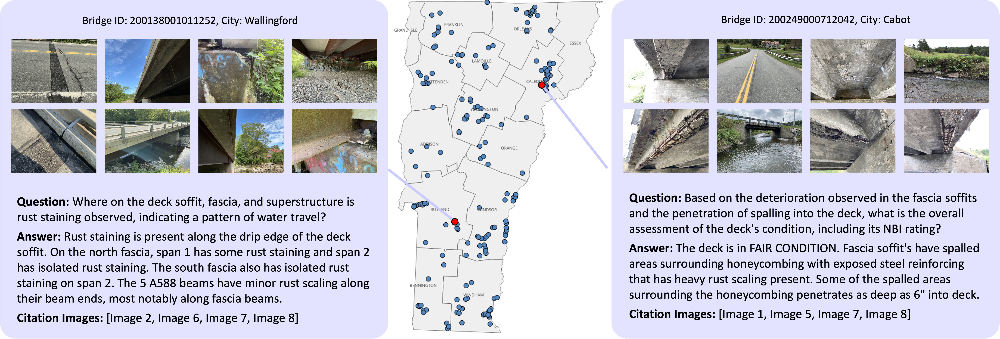
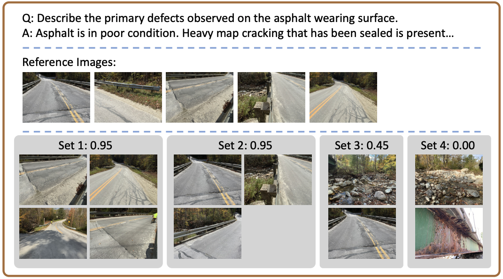
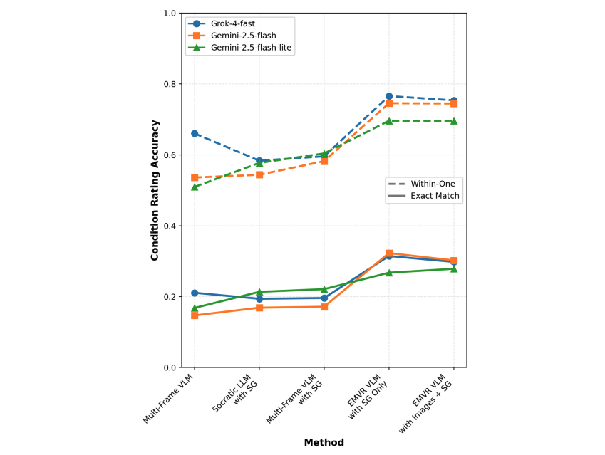

BridgeEQA consists of 2,200 open-vocabulary question-answer pairs grounded in professional inspection reports across 200 real-world bridge scenes.
EMVR outperforms baselines on BridgeEQA by guiding agents to traverse scene graphs via MDP and dynamically collecting visual evidence for question answering.
Inspired by the challenges of infrastructure inspections, we propose Inspection EQA as a compelling problem class for advancing episodic memory EQA. We define inspection EQA as a general problem class: asset-centric, multi-view question answering in which an agent must synthesize visual evidence across multiple viewpoints of an inspected asset, align its answers to a standardized condition rubric, localize the supporting evidence, and achieve agreement with domain experts.
EMVR frames an agent's decision process as sequential navigation and selective recall, enabling it to retrieve and prioritize only the visual evidence needed to answer an inspection query. The agent navigates a scene graph via an MDP, retrieving images dynamically to bring only relevant information into context.

Bridge inspectors justify condition ratings with photographic evidence. Similarly, Image Citation Relevance evaluates whether agents cite appropriate supporting images by semantically comparing agent selections against a reference set. A VLM-as-a-Judge receives the question, the ground truth answer, reference images (as examples, not definitive ground truth), and agent-selected images, then scores on a 0.0–1.0 scale while penalizing over-selection in the event that an agent cites more than 5 times the number of images in the reference set.

EMVR VLM with SG Only and EMVR VLM with Images + SG significantly outperforms benchmarks on the BridgeEQA benchmark in both within-one and exact match condition rating accuracy.
@misc{varghese2025bridgeeqavirtualembodiedagents,
title={BridgeEQA: Virtual Embodied Agents for Real Bridge Inspections},
author={Subin Varghese and Joshua Gao and Asad Ur Rahman and Vedhus Hoskere},
year={2025},
eprint={2511.12676},
archivePrefix={arXiv},
primaryClass={cs.CV},
url={https://arxiv.org/abs/2511.12676},
}